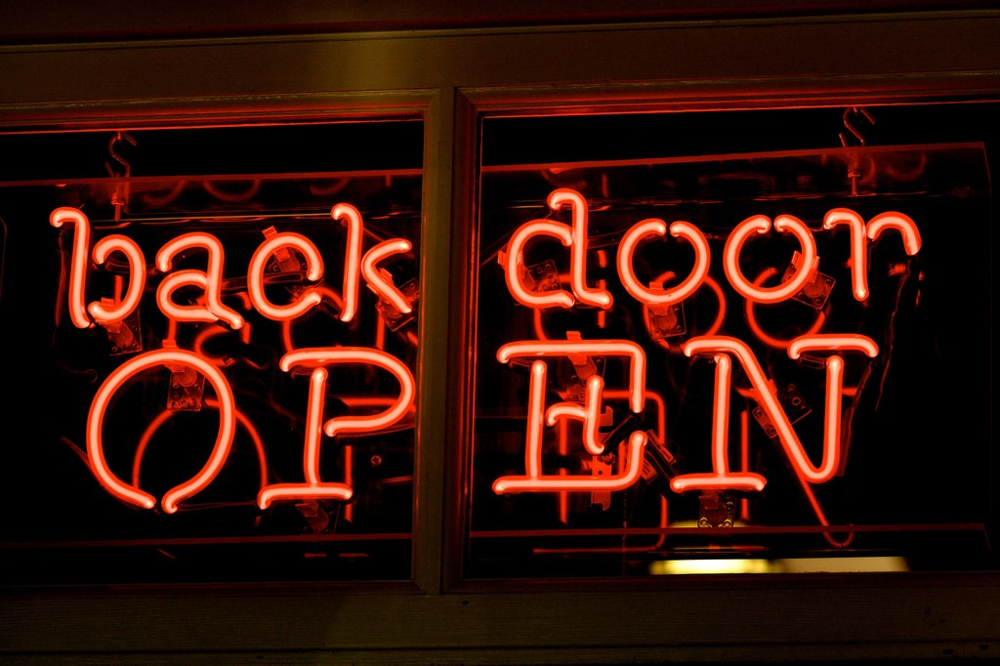

BackDoor
The backdoor is a system of penetrating the computer system or translated data to bypass the security system.
|
|---|
How backdoors workSome backdoors can be legitimate and are put in place by authorized vendors,
at the same time other backdoors are introduced inadvertently as a result of programming errors.
Sometimes backdoors are used during the development process and forgotten to be removed by the same developers.
|
|---|
Detection and PreventionNowadays is easy to detect malware and particularly the backdoor cause
the detection methods are influenced by the machine’s operating system. |
 |
|---|
Famous BackDoor attackFireEye backdoor
Another famous backdoor attack was developed by the young hacker Jonathan James,
At only 15 years old boy in 1999 succeeded intrude into United States of Department computers and NASA. |
|---|
NASA and the US State DepartmentAnother noteworthy hacker assault was the one engineered by Jonathan James, a 15 years old boy in 1999, who managed to sneak into NASA and US State Department computers. Specifically, this young man spied on thousands of e-mails and confidential documents that also contained passwords of military devices, installing on the servers a backdoor (a series of commands to access software) and partially taking possession of a NASA program code. |
|---|
BackDoor |
Nicolò Tafta |
nicolo.tafta@usi.ch |
|---|